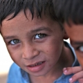

About Us
This Web-based Waste Food Management system can assist in collecting the
leftover food from hotels & restaurants to distribute among those in need.
NGOs that are helping poor communities to battle against starvation &
malnutrition can raise a request for food supply from restaurants through
this Website. Once the request is accepted, the NGOs can collect the food from
the restaurants for its distribution. In this way this Web-based waste food management
system will help restaurants to reduce food waste and will help in feeding
he poor and needy people.In this system, we have tried to reduce restaurant
food wastage by giving waste food to NGOs. NGOs will raise a request, in case of
any leftover food restaurants Sustainable Management of Food is a systematic approach
that seeks to reduce wasted food and its associated impacts over the entire life cycle,
starting with the use of natural resources, manufacturing, sales, and consumption
and ending with decisions on recovery or final disposal.EPA works to promote innovation
and highlight the value and efficient management of food as a resource.Through the sustainable
management of food, we can help businesses and consumers save money, provide
a bridge in our communities for those who do not have enough to eat,and conserve
resources for future generations.

The Idea
Who we are?
The Robin Hood Army is a volunteer based, zero-funds organization
that works to get surplus food from restaurants and the community
to serve less fortunate people.Our local chapters are run by friends
and colleagues, who hope to create a difference in their own unique way.
For example, restaurants in the neighbourhood Green Park, will contribute
to the homeless of the locality, through volunteers who live in Green Park.
Our “Robins” are largely students and young working professionals – everyone
does this in their free time.
The lesser fortunate sections of society we serve
include homeless families,
orphanages, patients from public hospitals, and old age homes.
Our Vision
Simple really,beat global hunger and bring out the best of humanity
using food as a medium.
The idea is to create self-sustained
chapters across the world who will look after their local community.
And in the process,
inspire people around us to give back to those who need it most.
~ The problems ~
The challenge is not a lack of food — it is making food consistently available to everyone who needs it.
Hunger kills more people each year than AIDS,
malaria and terrorism combined.

Every 10 seconds, a child dies from hunger
82% of hungry people live in countries with food surpluses,
not food shortages

One-third of the food produced around the
world is never consumed

850 million hungry people in the world
~ Our Journey ~
On the army’s first night of distribution, we realized that helping the less fortunate may feel good personally, but feeding 50 odd people at night, once a week would not create any real difference in a country where millions are starving. Hunger is an acute problem. We needed to reach out to more people, more restaurants, and more cities - our deadline being yesterday.
~ HOW CAN U HELP ~
_Volunteer Time_
All we need is 3 hours/week at least twice a month to make a real impact. If we have a team in your city looking to grow, a Robin will reach out to you.
_Contribute Food_
If you manage a restaurant or generally want to contribute regular meals from your family or workplace, let’s connect.
_Teach_
Creating access to education is the purest form of nation building – do you want to teach our kids in the Right Cause?
@copyright The Right Cause
2022 © All rights reserved.
www.therightcause.in